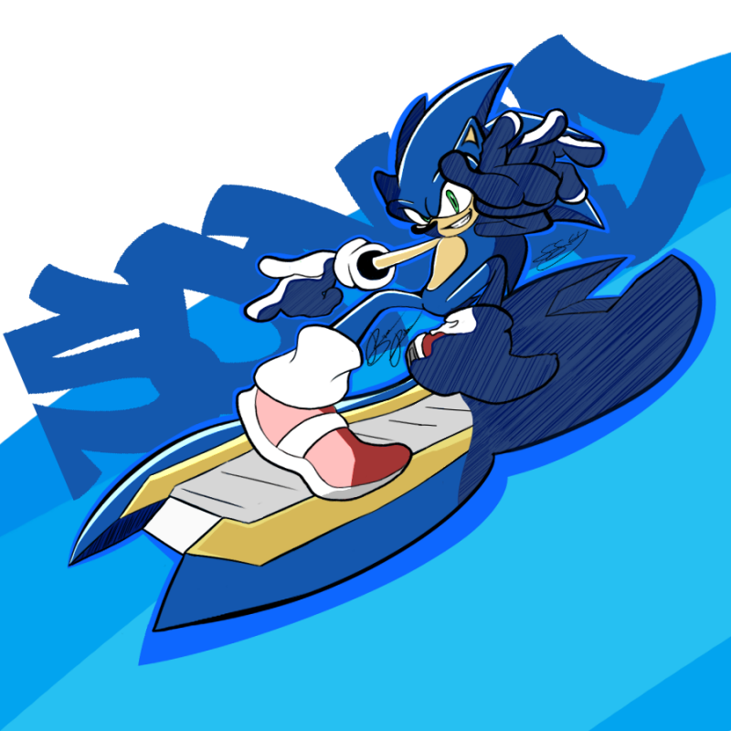

Sonic The Hedgehog

Background
Sonic is the titular main protagonist of the Sonic the Hedgehog series and Sega's mascot. He is an anthropomorphic hedgehog known for his ability to run faster than the speed of sound, hence his name. As his species implies, Sonic can roll up into a concussive ball, primarily to attack enemies.
Abilities
- Sonic Speed
- Homing Attack
- Light Speed Dash
- Super Form/Transformation
Personality
Sonic is described as "like the wind", a free-spirited drifter with an insatiable appetite for adventure. He values freedom above all else and lives by his own rules rather than societal standards. Sonic's primary passion is speed, and he likes anything that is fast. His Favorite food are chili dogs!
First Appearance
Sonic The Hedgehog (1991)